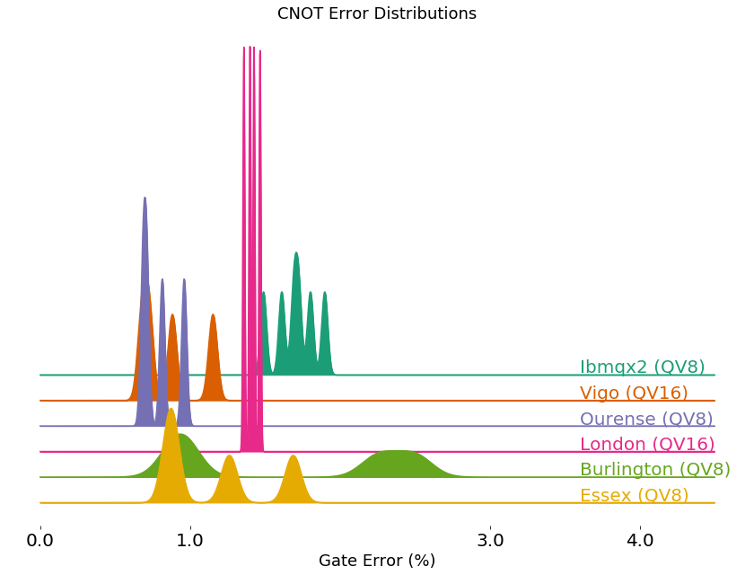

cnot_error_density¶
-
cnot_error_density(backends, figsize=None, colors=None, offset=None, xlim=None, text_xval=None, xticks=None)[source]¶ Plot CNOT error distribution for one or more IBMQ backends.
- Parameters
backends (list or IBMQBackend or BackendProperties) – A single or ist of IBMQBackend instances or properties.
figsize (tuple) – Optional figure size in inches.
colors (list) – A list of Matplotlib compatible colors to plot with.
offset (float) – Positive offset for spacing out the backends.
xlim (list or tuple) – Optional lower and upper limits of cnot error values.
text_xval (float) – Optional xaxis value at which to start the backend text.
xticks (list) – Optional list of xaxis ticks to plot.
- Returns
A matplotlib Figure instance.
- Return type
Figure
- Raises
KaleidoscopeError – A backend with < 2 qubits was passed.
KaleidoscopeError – Number of colors did not match number of backends.
Example
from qiskit import * from kaleidoscope.qiskit.backends import cnot_error_density provider = IBMQ.load_account() backends = provider.backends(simulator=False, filters=lambda b: b.configuration().n_qubits == 5) cnot_error_density(backends)
